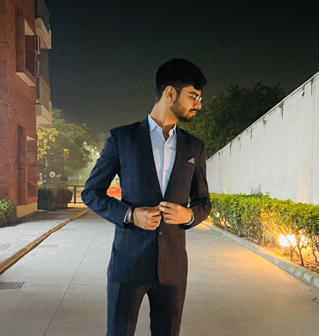

Anshul Shrivastava
Contact me
About Me

Education
Shiv Nadar Instituition of Eminence (2020-2024)
- Bachelor of Technology in Electrical and Electronics Engineering
- Minor in Computer Science & Engineering
- GPA : 8.15
St Xaviers School, Bokaro (2018-2020)
- 12th ISC Board (PCM with Computer Science)
- 10th ICSE Board
Relevant Coursework
- Java
- OOPS
- Data Structures
- Computer Networks
- Operating System
- DBMS
Experiences
Projects
Regional Container Lines(July 2022)
- Created the login ID and user page for the RCL group by utilizing HTML, CSS, and Bootstrap.
Notepad Clone App(November 2022)
- Created a Notepad clone application in Java utilizing the Java GUI, Swing components, and Java Collections
Frameworks.
- Implemented several text editing functionalities, such as cut, copy, paste, undo, and redo, to enhance the application’s
functionality and user experience.
Adaptive Short Time Fourier Analysis(December 2022)
- Created and implemented a novel adaptive technique in MATLAB to optimize the performance of short-time Fourier
analysis.
- Leveraged relevant parameters and input data to dynamically adjust the window length, resulting in enhanced accuracy
and efficiency of signal analysis.
Technical Skills
- Languages:- C++, Java, Python, C, HTML/CSS, Bootstrap, JavaScript, React. js, Matlab
- Soft Skiils:- Problem-Solving, Teamwork, Logical Thinking, Analytical Skills
- Hobbies:-Badminton, Singing, Anchoring
Clubs and Societies, and Achievements
- BREEZE: Annual Flagship cultural fest of Shiv Nadar University (March 2023)
Team Member
- Spic Macay (2021 - 2022)
Core Member
- Institute of Electrical & Electronics Engineering (2020 - 2021)
Club Member
- Rotary Interact Club, St. Xavier’s School (2019 - 2020)
President
- CISCE National Badminton Tournament, Bangalore (November 2019)
Runners Up